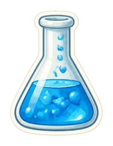
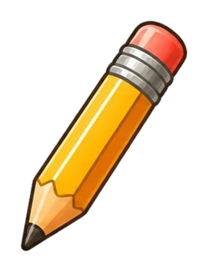

🔐 2번 방 · 물건을 자세히 탐구하기6차시 / 5~9도입

물건 교과서 · 방 탈출 미션
2번 방 · 6차시
생김새에는
비밀이 있다
손잡이, 눈금, 빗살은 왜 있을까?
지난 미션 돌아보기
5차시 비밀 문장, 기억나요?
여러 감각으로 자세히 관찰하면
물건의 특징을 찾을 수 있어요.
물건의 특징을 찾을 수 있어요.
🕵️ 숙제 확인! 특별한 생김새가 있는 물건을 찾아왔나요?
“이 부분은 왜 이렇게 생겼을까?”
“이 부분은 왜 이렇게 생겼을까?”

🚨 싹쓸이 마법사가 물건의 한 부분을 쏙 빼 갔어요!

MISSION BRIEFING
오늘의 미션 네 가지
미션 1
이 부분이 없다면?
빠진 부분이 하던 일 찾기
미션 2

실험 스테이션
직접 해 보며 비밀 찾기
미션 3

물건 디자이너
생김새 바꾸기 아이디어
미션 4
생김새 비밀 카드
내 물건의 비밀 기록
보상
열쇠 조각 2
2번 방 두 번째!
🎯 학습 목표 물건의 특별한 생김새가 어떤 일을 하는지 알아보고 말할 수 있어요.
MISSION 1
🪄 만약 이 부분이 없다면?
1
빨간 동그라미 속 생김새의 이름을 말해요.
2
마법사가 그 부분을 쏙 빼 버리면 물건이 어떻게 생겼을까요?
3
한 친구가 나와 그 부분이 없는 물건을 쓰는 흉내를 내요.
4
“○○이 없으면 ~해서 불편해요!” 다 같이 말해요.
MISSION 3 · 혼자 해요
✏️ 물건 디자이너
1
화면에 나온 물건을 잘 살펴봐요.
2
그 물건에 불편한 일이 생겼어요! 무엇이 불편할까요?
3
1분 동안 생김새를 바꾼 내 아이디어를 종이에 그려요.
4
정답은 하나가 아니에요! 여러 가지 아이디어를 함께 살펴봐요.
MISSION 4 · 활동 시간
생김새의 비밀을 기록해요!
NEXT MISSION
7차시 예고
재료가 다르면
재료가 다르면
달라질까?
종이, 천, 플라스틱… 재료마다 무엇이 다를까?
🕵️ 종이·천·플라스틱 물건을 하나씩 찾아오세요!